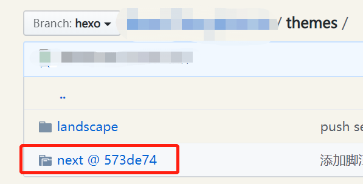
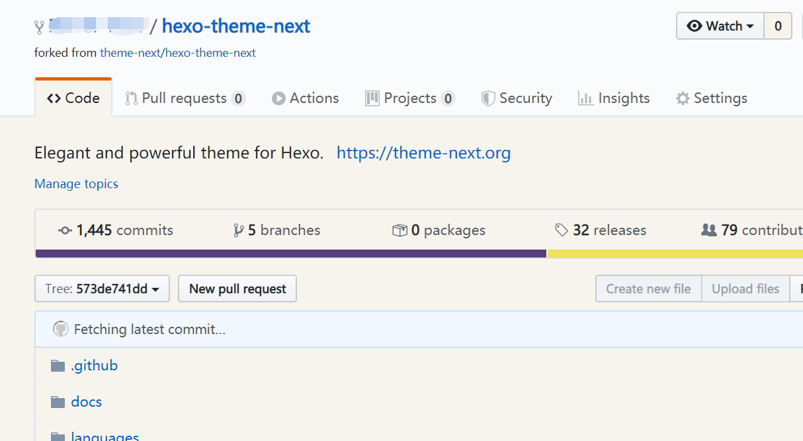
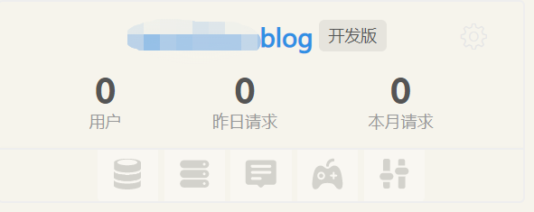
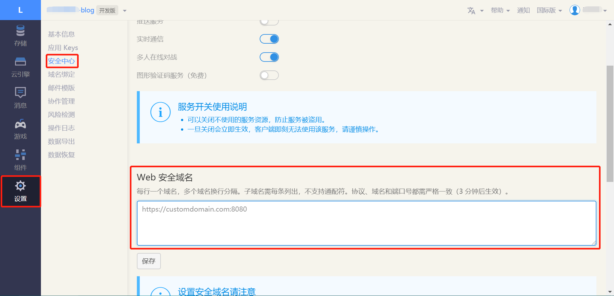
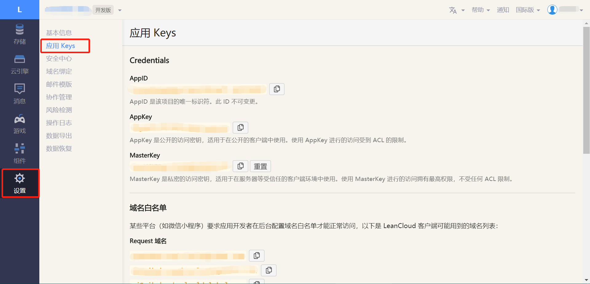
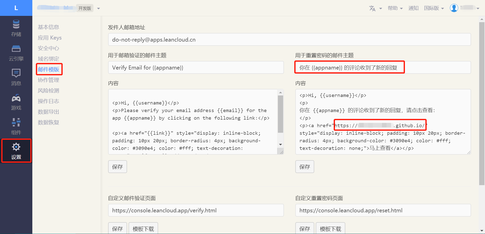

Hexo 默认的主题 landscape，个人觉得比较憨憨，也不好看，因此换用更常见也更美观的 NexT 的主题。
注1：本篇文章的所有配置都是在 Windows 10，Hexo-cli 3.1.0 和 NexT v7.8.0 下完成的。
注2：本篇文章中会出现两份 _config.yml。一份位于站点根目录，主要包含 Hexo 的配置；另一份位于 NexT 主题目录下，主要用于配置主题相关的选项。为了描述方便，在文章中，将前者标识为站点配置文件， 后者标识为主题配置文件。
1 - 安装 NexT 主题
朋友们可以根据自己的喜好安装其他主题，通用步骤如下
1.1 - 下载主题
首先我们切换到博客根目录（后文用 blog 指代）
1 | $ cd blog |
注意！我要变形了 此处有大坑
错误示范 1
在 NexT 主题的官方文档[1]，我们可以看到推荐的安装方式是
1 | $ git clone https://github.com/theme-next/hexo-theme-next themes/next |
这段代码的含义是把 hexo-theme-next 这个远程仓库，拷贝到 themes/next 目录下。但是这样安装会产生如下的问题：
- 用
git clone是把一个独立的仓库克隆到我们的的 Hexo 源码中，我们的 Hexo 源码也是一个仓库，所以就产生了父子关系，即 NexT 主题仓库成为了我们主仓库下的一个独立子仓库。父仓库不会对子仓库进行管理，这样就违背了我们用 Git 进行版本控制的初衷； - 我们可以删除 NexT 项目下的
.git文件，把themes/next变成一个普通的目录，这样就取消了父子仓库关系。但是如果后续主题作者有更新，就不能直接用git pull拉取更新，而是需要手动安装，覆盖原来的文件，重新配置主题，不易维护。
好在 Git 提供了子模块 submodule 功能，可以优雅地避免上面的问题。它允许我们将一个 Git 仓库作为另一个 Git 仓库的子目录，同时还保持提交的独立。
错误示范 2
但是，直接在终端输入如下的代码，仍然是不妥当的
1 | $ git submodule add https://github.com/theme-next/hexo-theme-next themes/next |
为什么呢？其实这样子，在我们本地修改和使用主题的时候是没有问题的 ~
但是当我们要把修改提交到 GitHub 时，会导致我们把自己的文件，提交到主题原作者的仓库去，这显然是不合适的！
正确示范（敲黑板！
因此，下载主题的正确操作流程应该是介样的：
- 在 GitHub 上，把原作者的主题 fork 到我们自己的仓库中
- 运行以下命令，把 NexT 主题添加为我们博客的子模块
1 | $ git submodule add https://github.com/<username>/hexo-theme-next themes/next |
username 为我们自己的用户名。
如此这般，在我们把自己的修改 push 到远程仓库后，可以在 GitHub 上看到，themes/next 的图标跟平常的文件夹不太一样

鼠标单击一下，我们就跳转到了前面自己 fork 下来的主题仓库。因此，这里图上的 next @ xxxxxx，就是一个跳转到其他远程仓库的快捷方式。

1.2 - 修改 Hexo 配置
为了启用 NexT 主题，我们要在站点配置文件中找到 theme 字段并将其值更改为 next。
1 | # Extensions |
1.3 - 测试
在终端以调试模式启动本地服务器
1 | $ hexo clean |
然后用浏览器访问 http://localhost:4000，检查站点是否正确运行。
2 - 修改主题配置
官方文档[2]描述得很详细了，按顺序一步步配置即可，在此不多赘述。
3 - 分类页和标签页
与默认的 landscape 主题不同，NexT 主题的分类页和标签页需要自己创建，然后关联到首页上。
分别执行以下步骤：
3.1 - 新建页面
在终端输入
1 | $ hexo new page <type> |
这里的 type，对于分类页请替换为 categories，对于标签页请替换为 tags。
3.2 - 设置页面类型
编辑刚新建的页面，将页面类型设置为 type。同样，分类页替换为 categories，标签页替换为 tags。
1 | title: 标签 |
3.3 - 在菜单中添加链接
修改主题配置文件，取消 tags 和 categories 项的注释。
1 | menu: |
4 - 评论系统和阅读统计
评论系统有很多家可以选择，最常见的应该是 Disqus 了。
不过我选择的是 Valine，这是一个基于 LeanCloud 的无后端评论系统，并且集成了阅读统计功能。
别问，问就是懒
值得一提的是，NexT 支持多评论系统，我们可以尝试同时开启 Disqus 和 Valine 系统，但本篇文章不讨论这个内容。
4.1 - 注册 LeanCloud
登录或者注册 LeanCloud，推荐使用国际版，不需要进行域名备案。
完成必要的身份验证后，创建一个开发版应用。

进入刚刚创建的应用，点击 设置 > 安全中心，在 Web 安全域名 中输入我们博客的网址。

点击 设置 > 应用Keys，就能看到你的 AppID 和 AppKey 了：

点击 设置 > 邮件模板，按下图设置好用于重置密码的邮件主题

内容部分如下：
1 | <p>Hi, {{username}}</p> |
注意修改链接为自己的博客首页。
4.2 - NexT 配置
当前版本的 NexT 已经集成了 Valine，我们只需要在主题配置文件简单设置即可。
1 | # Valine |
把在 LeanCloud 申请的 AppID 和 AppKey 填入，并把 notify，visitor 和 comment_account 字段设置为 true。
5 - 数据统计与分析
常见的工具有百度统计、CNZZ 统计、Google Analytics等。
我太困了，不想写了，请参考官方文档[3]。
6 - 版本控制
6.1 - 推送至 GitHub
当我们对主题（子模块）的内容进行修改时，Hexo 站点（主模块）只知道我们进行了修改，但是并不会管理我们具体进行了什么修改。
因此，子模块和主模块需要分开 push，一般先推送子模块，后推送主模块。
6.2 - 从原作者处更新主题
如果使用的主题仍在被维护，那么我们就能从远程获取更新。操作很简单：
1 | $ git submodule update --remote |
6.3 - 在另一台电脑上工作
与普通的 git clone 相比，只需要多做一步——加上 --recursive 参数。
1 | $ git clone --recursive <your repo address> |
当然，有的时候秀逗了会忘记，没关系，以下命令和上面这条的功能是一样的。
1 | $ git clone <your repo address> |
6.4 - 删除 submodule
我，3个月换一次老婆

有时候难免尝试一下新的 老婆 模块，但是实测不满意，想要 退货 卸载。
这个操作曾经很麻烦，但是现在只需要一条命令就能完成：
1 | $ git submodule deinit <submodule-name> |
7 - 一定不会鸽的预告
- NexT 主题个性配置
- 添加多语言支持
- Git 常用操作集锦